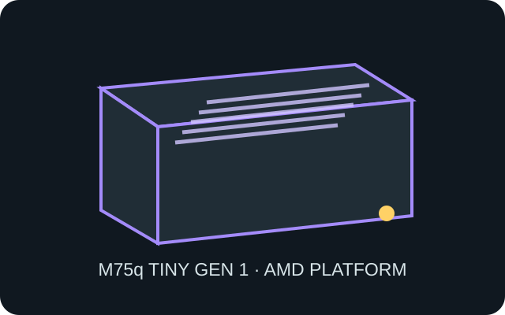

[ IDENTIFIED SYSTEM // AMD TINY ]
Lenovo ThinkCentre M75q Tiny Gen 1
First-generation M75q Tiny AMD business desktop, approximately 179 × 182.9 × 34.5 mm (W × D × H); confirm type and option configuration.

MODEL TYPE: ThinkCentre M75q Tiny 1st Gen. Do not substitute M75q Gen 2 or Intel M70q parts without matching FRU verification.
Specifications & fit
| Dimensions / type | Approximately 179 × 182.9 × 34.5 mm (W × D × H), 1 L-class proprietary Tiny chassis. |
|---|---|
| Board / power | AMD-specific Lenovo proprietary system board with external Lenovo 65 W or 90 W adapter as required by build; not a standard motherboard/PSU enclosure. |
| Drive bays | M.2 2280 SSD position plus optional 2.5-inch SATA drive bay, subject to the supplied cable, bracket and configuration. |
| Expansion | No conventional PCIe expansion slot. M.2 positions accommodate storage and wireless; selected rear I/O port is a factory option. |
| Thermal / maintenance compatibility | Use unobstructed intake and exhaust clearances in stand or VESA mounts. Disconnect external power before opening; retain AMD-specific heatsink/fan, drive carrier and antenna routing together. |
Compatibility & preservation notes
The Tiny metalwork is not a generic SFF motherboard tray. Match the exact machine type and Lenovo FRU before replacing the board, fan, adapter or storage carrier.
- Do not force a later-generation board into this chassis; front/rear I/O, cooler and mounting positions are generation-specific.
- Clean the air path and heatsink without bending the fan duct or pulling wireless antenna leads.
Manufacturer specifications & service sources
- Lenovo PSREF — ThinkCentre M75q Tiny 1st GenManufacturer platform reference for dimensions, configuration and options.
- Lenovo Support — M75q-1 Desktop guides and manualsManufacturer documentation library for the first-generation M75q; verify machine type and FRU.